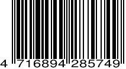

創刊號
NO.1
視網膜早報
RETINA MORNING POST
今日焦點▹▹▹
TOP 1.
北韓再射彈
美匪關係恐生變
美匪關係恐生變
TOP 2.
委內瑞拉情勢慘
石油崩價政府亂
石油崩價政府亂
TOP 3.
匪性解放軍九十年
維尼閱兵放蕩萌
維尼閱兵放蕩萌
星座運勢▹▹▹
★★★
牡羊座♈
考卷第2題答案選B
比較符合你唷！
★
獅子座♌
早上六時廿五分記得排便
否則你今天會衰整天！
牡羊座♈
考卷第2題答案選B
比較符合你唷！
★
獅子座♌
早上六時廿五分記得排便
否則你今天會衰整天！
停班停課一覽⚠
臺南市 ▼
2小時
高雄市 屏東縣 ▼
停止上班上課
2小時
高雄市 屏東縣 ▼
停止上班上課
註：宣布結果恐因神明顯靈異動
靜思小語
每個成功的男人，
背後都有一條脊椎。
背後都有一條脊椎。
視網膜早報 特價NT.1000/頁

大房航空班亂 遊客怒跳跳
忌妒前晚旅客能玩「大怒神」 空服請假害人無法尋求刺激
[突發中心 桃園機場報導]
劣！劣！劣！大房航空
又在颱風天出包。據了
解，大房航空３０日多
名空服員只顧自身性命
，囂張請假，不管桃園
、台北水上樂園民眾的
情感，致使萬名旅客崩
潰。
大房航空對此召開記者
會，強調空服員請假人
數太多，才致使多架大
怒神停止運轉。大房工
會則反擊，公司早在５
小時前就知道航班調度
有問題，卻不提前告知
旅客，意圖使民眾對空
服產生不良印象。當然
，大房高層再發新聞稿
澄清。
林姓旅客表示，支持大
房高層，否則以後無法
如期玩大怒神，誰還能
把關？李姓專家則歪樓
，颱風天過後台北滿街
殘枝敗葉，「大家以後
還要投柯文哲嗎？」
劣！劣！劣！大房航空
又在颱風天出包。據了
解，大房航空３０日多
名空服員只顧自身性命
，囂張請假，不管桃園
、台北水上樂園民眾的
情感，致使萬名旅客崩
潰。
大房航空對此召開記者
會，強調空服員請假人
數太多，才致使多架大
怒神停止運轉。大房工
會則反擊，公司早在５
小時前就知道航班調度
有問題，卻不提前告知
旅客，意圖使民眾對空
服產生不良印象。當然
，大房高層再發新聞稿
澄清。
林姓旅客表示，支持大
房高層，否則以後無法
如期玩大怒神，誰還能
把關？李姓專家則歪樓
，颱風天過後台北滿街
殘枝敗葉，「大家以後
還要投柯文哲嗎？」
安什麼心？
島內不知名插畫
竟作圖諷大航
竟作圖諷大航
[記者 台北報導]近來不少
網紅靠嘲諷他人成名，水
準堪慮。島內不知名圖文
作家「厭世動物園」亦加
入行列，畫了三隻綠色雞
加大雨，暗諷大房航空颱
風天硬飛，行徑離譜。本
報提醒您，破壞商譽恐觸
法，請潔身自愛。
網紅靠嘲諷他人成名，水
準堪慮。島內不知名圖文
作家「厭世動物園」亦加
入行列，畫了三隻綠色雞
加大雨，暗諷大房航空颱
風天硬飛，行徑離譜。本
報提醒您，破壞商譽恐觸
法，請潔身自愛。
不知名圖文創作家「厭世
動物園」作圖諷大房航空
動物園」作圖諷大房航空
大房航空
三房醫院
三房醫院
亂！風水師：祖墳問題
[命理中心 台北報導]
大房航空近來問題多，
但三房醫院內鬥戲碼也
讓外界看的霧煞煞。有
風水師就直言，雖然不
知他們家祖墳在哪，但
用屁股想也知道有問題
，建議找幾台ＳＮＧ車
一起到祖墳連線，借觀
落陰的勢來看看問題出
在哪，也許記者會把問
題點出來。
島內有媒體直指，「綠
色恐怖」是最大問題，
祖墳冒出綠色的草，就
表示唐鳳在操弄、作法
，要破解此一魔咒恐怕
相當困難。
祖克柏對此回應，如果
來下廣告就放你一馬，
很好談的。（詳Ａ１）
大房航空近來問題多，
但三房醫院內鬥戲碼也
讓外界看的霧煞煞。有
風水師就直言，雖然不
知他們家祖墳在哪，但
用屁股想也知道有問題
，建議找幾台ＳＮＧ車
一起到祖墳連線，借觀
落陰的勢來看看問題出
在哪，也許記者會把問
題點出來。
島內有媒體直指，「綠
色恐怖」是最大問題，
祖墳冒出綠色的草，就
表示唐鳳在操弄、作法
，要破解此一魔咒恐怕
相當困難。
祖克柏對此回應，如果
來下廣告就放你一馬，
很好談的。（詳Ａ１）
廣告
廣告